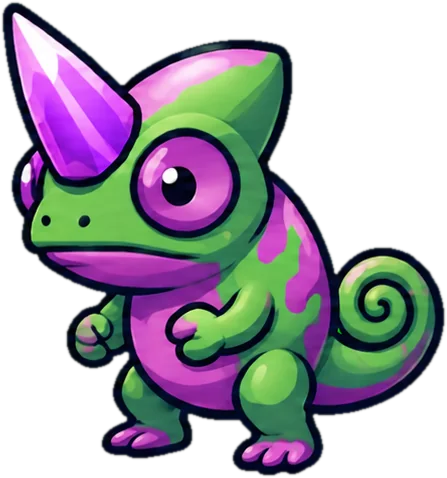

Tap a stage to read its story.
Amethib is a small bright-green lizard with a yellow underbelly and a single large purple amethyst horn jutting from its forehead. Its scales are smooth and vibrant, and its long tail curves behind it with a jaunty flick. In Shadow Caves' dim passages it uses its horn to scratch glowing grooves into the cave walls - these marks are actually directions back to safe ground, a habit it has never stopped. Hatchling Amehibs emerge from the cave rock itself, as if the stone decided to grow legs.
Field note: The scratch-marks Amethib leaves on cave walls form a complete map of its territory - readable to other Amehibs but not to outsiders.
Shadow Caves. Amethib and its family are found in the Shadow Caves. See everyone who lives there.
Share a Bond Food that matches its types to become friends. Amethib loves:
A Bond Food is not a trick. It joins your spirit with the Kimuro's spirit, and only when it chooses you.
Print the Kimuro adventure packs: mazes, cards, a board game and Bond Mark medals.
See the printable packs